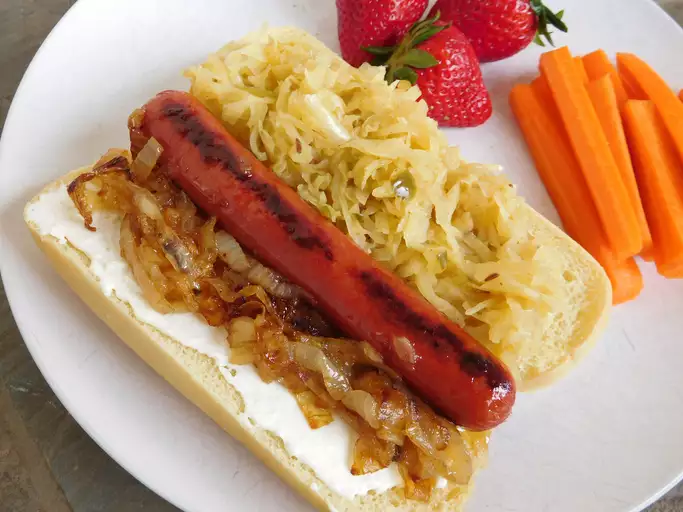

Hotdog

Description
On the streets of Seattle, after the bars close, and during sporting events, these are a local favorite--warm cream cheese spread on your favorite hotdog!
Ingredients
- 1/4 cup butter
- 1 Sweet Onion
- 1 ounce of cream cheese
- 4 hot dogs
- 4 buns
- Brown mustard
- Sauerkraut
Recipe
- Preheat grill or grill pan for medium-high heat.
- Melt butter in a skillet over medium heat. Add onions, and cook slowly until the onions have softened and turned deep brown, about 15 minutes. Warm the cream cheese over low heat in a small skillet until very soft.
- Grill hot dogs until well browned. Lightly grill hot dog buns on both sides.
- To assemble cheese dogs, spread warm cream cheese on toasted hot dog bun, add hot dog or sausage, top with onions, mustard and sauerkraut, if desired.